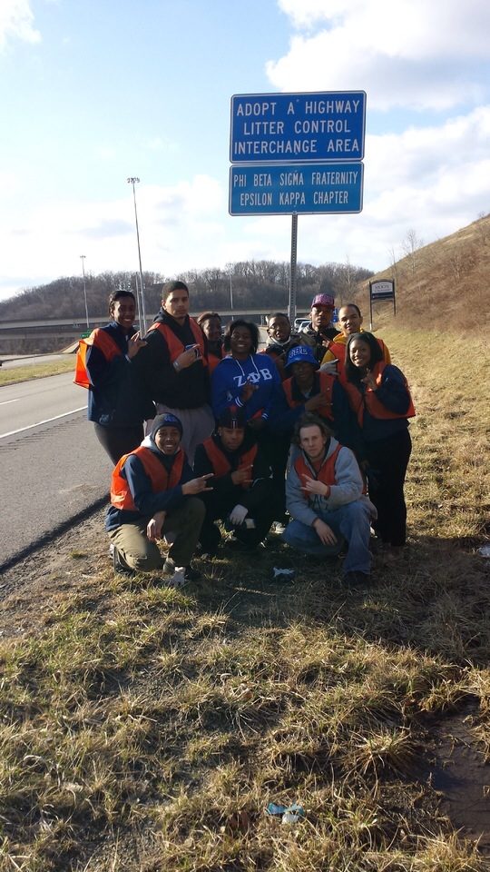

Adopt-a-Highway
The Epsilon Kappa Chapter of Phi Beta Sigma Fraternity, Inc. at the University of Pittsburgh has adopted a strip of Interstate 376 West near the Pittsburgh International Airport.
In an effort to beautify the roads that the residents of Pittsburgh see every day as well as a section of road that is one of the first things vistors to our city will see on their way from the Airport, the brothers of Phi Beta Sigma travel out to this highway to both clean up the trash that has littered the roadside, as well as be a visible presence to drivers to discourage future littering on our roads.